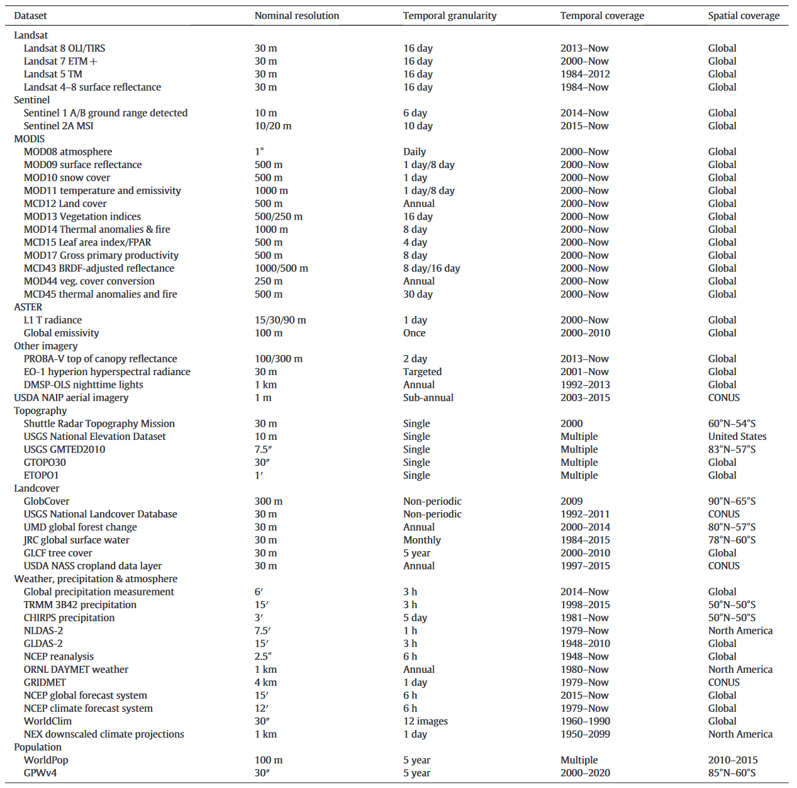
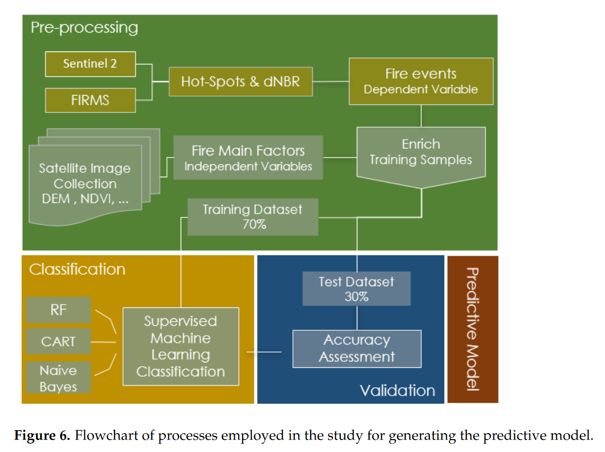
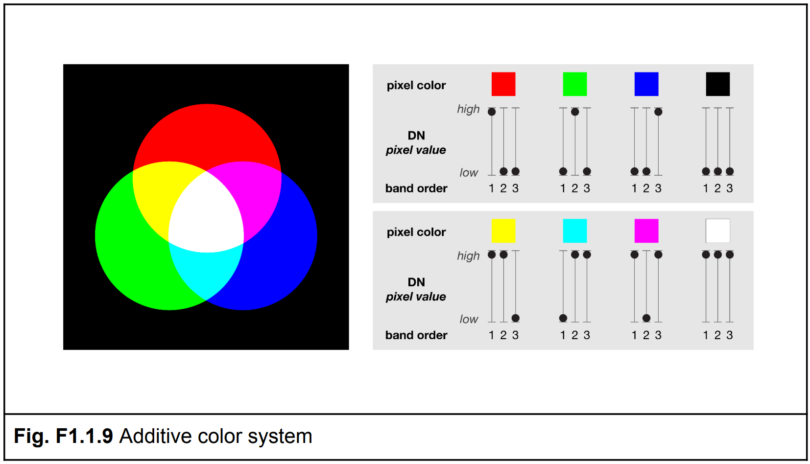

5 Google Earth Engine
5.1 Summary
What is Google Earth Engine (GEE)?
Earth Engine is a cloud-based application designed for the analysis and exploration of remote sensing data. It provides access to powerful supercomputing resources and an extensive database of freely available remote sensing data, from a variety of sources and sensors. The data in Earth Engine is preprocessed and analysis-ready, and the catalogue is continuously updated with data becoming available on average within 24 hours of acquisition (Gorelick et al. 2017).
How does it work?
Analysis is divided between a client side - the Earth Engine browser interface - and the server side, where the data is stored and the processing is performed.
Due to the huge volume of data that can be involved in Earth Engine calculations and visualisations, the system also uses different methods to reduce data load/computing time:
In Earth Engine, the spatial resolution is determined by the output, not the input. The system stores a ‘pyramid’ of progressively reduced resolution tiles, which adjust depending on the scale of the user’s view. The smaller (reduced resolution) layers of the pyramid are calculated through a down-sampling method, such as the mean for numeric data, or the mode for classification data.
‘Lazy’ computation refers to the process of only computing the data that are necessary, such as that in the user’s current view (if using an interactive display). The window’s zoom level and bounds will dynamically control the projection and resolution of the computed data.
The Earth Engine code library provides a suite of inbuilt functions that are designed to maximise performance on the cloud-based computing system. Methods such as parallelisation and distributed computing break down larger jobs to be run across many smaller machines, allowing faster times to produce client output.
Source: Gorelick et al. (2017)
What data can I find?
Earth Engine holds a broad data catalogue, which can be accessed here: https://developers.google.com/earth-engine/datasets.
Gorelick et al. (2017) also provide a useful summary table of key satellites and datasets.

5.2 Application
Building a remote sensing machine learning pipeline using Earth Engine
Sulova and Jokar Arsanjani (2021) incorporated Earth Engine data into a machine learning pipeline, for the analysis of drivers of wildfire in Australia. This study is interesting because it outlines the full workflow of an open source remote sensing analysis, from the collection and processing of freely available data in Earth Engine to then become an input into a series of machine learning models (random forest, naive bayes, and a classification and regression tree) to identify the most effective. The output of the study is an automated workflow for developing large, labelled training datasets using Earth Engine to be applied in supervised machine learning.
In the flowchart below, Earth Engine is used for the extraction and analysis of Sentinel-2, FIRMS, DEM, NDVI and other satellite image collections, in the pre-processing stage.

Finer scale malaria mapping in low transmission settings
Sturrock et al. (2014) have used remote sensing data from Earth Engine in conjunction with routine malaria case data from health facilities to map malaria risk in Eswatini (Swaziland). The researchers used a suite of remotely sensed ecological/environmental covariates, including enhanced vegetation index (EVI), normalised difference water index (NDWI), and normalised difference vegetation index (NDVI), captured by MODIS and sourced from Earth Engine. All covariates were resampled to a 1km resolution and then fed into a hierarchical modelling framework.
The study is intended as a proof-of-concept for implementing the methodology in diverse settings. Utilising Earth Engine for the remote sensing aspect means the method can be freely and relatively easily replicated, especially in potentially resource-limited settings.
5.3 Reflection
One of the key valuable lessons I found this week was an explanation of the Red-Blue-Green colour channels, and how they apply in Earth Engine (and remote sensing imagery in general). When displaying an image digitally, the three colour channels are combined in an additive colour system (based in light, as opposed to subtractive colour composition, which is the result of mixing pigments or dyes - the distinction between these was an initial point of confusion for me).
Bands, which contain the data from a remote sensor at a specific spectral range, can be combined in the colour channels in any order. The order specifies which colour channel is used to display the digital number (DN) of the pixel. If the DN in the first band is higher compared with the other two bands, the pixel will appear reddish. The image below breaks down how colours on a screen correlate to band values (Howarth 2021).
